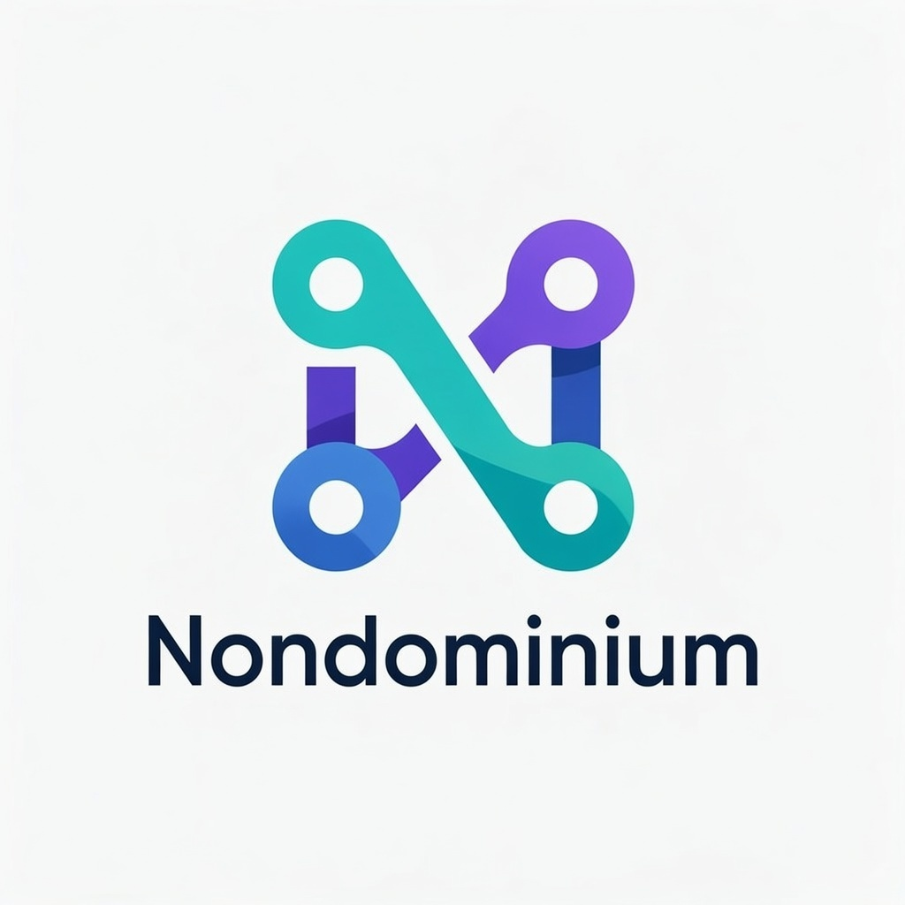

Stigmergic UI · working prototypes
All five directions run on the same mock peer-to-peer store, so what you do in one shows up in the others: pick up a signal in D, then see the trace in A. The data is saved in your browser, and each prototype has a reset control.
Start as a new agent opens A with no profile and no groups, so you can walk the whole flow: create a profile, then join the example network, start from a blank canvas (a new group) or paste an invite link, then declare your first NDO. Every prototype also has this under v0.1 flows ▾ → Prototype.
AMyceliumTrace field, fade slider, trail modes, signals, traces and You views, plus offline mode in the status bar.
BField NotesSearchable register, the trail as a journal, margin notes, and tabs for rules, instances and attachments.
CInstrumentCapability sockets with a trust filter, a 30-day trace scope, and signals on the spec sheet.
DSignal BoardPick up signals by lane, a live "just happened" column, a resource drawer and group scope.
EHolarchyZoom Lobby → Group → NDO. Click a ring to focus it; scroll down to zoom out.
FFlow GraphValueFlows lanes graph of the DHT, per conductor. Every action is a real zome call (see BACKEND.md). Uses its own store.
What works everywhere
- Scenario data comes from the user stories in
documentation/Applications/user-story/: equipment sharing (CNC machine), open science (cryo-EM), ArtCoin (Urban Rhythms), art production, exhibition tour, peer production and the food basket network. - All v0.1 flows are available in A–E from the v0.1 flows menu (⌘K), and also inline where each prototype shows them: profile and roles, new group with an invite link, join a group (try
ndo-invite:food-7k2p), declare an NDO, browse and filter NDOs, lifecycle transitions, governance rules, resources and custody, commitments and fulfilment, receipts and the reputation summary, and offline mode. - Backend rules are enforced. Only the initiator can change the lifecycle, only the custodian can transfer custody or change operational state, and Deprecated needs a successor.
- F runs on its own mock of the real zome calls. BACKEND.md maps each flow to its zome function.